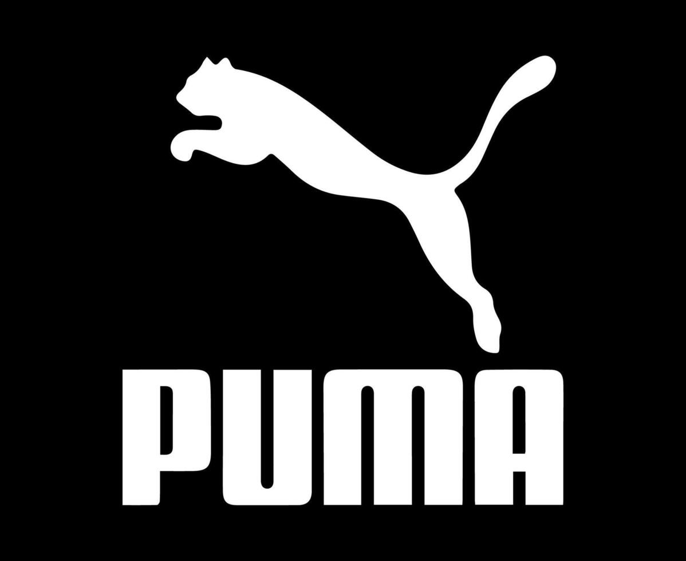

Nos anos 1920, os irmãos Rudolf e Adolf Dassler criaram uma fábrica de calçados de muito sucesso na Alemanha. Porém, após desentendimentos graves durante a Segunda Guerra Mundial, eles decidiram romper a sociedade em 1948.
Adolf fundou a Adidas (Adi + Das). Já Rudolf resolveu criar a sua própria marca. No começo, ele a batizou de Ruda (Ru + Da), mas logo mudou para Puma, buscando transmitir a agilidade, velocidade e força do felino.

Na Copa do Mundo do México, Pelé pediu para o juiz paralisar o jogo segundos antes do apito inicial apenas para amarrar suas chuteiras Puma, em um dos maiores golpes de marketing da história.
Nas Olimpíadas da Cidade do México em 1968, os velocistas norte-americanos Tommie Smith e John Carlos ganharam ouro e bronze nos 200m rasos. Ao subirem ao pódio, deixaram suas sapatilhas Puma na plataforma e ergueram os punhos com luvas pretas no famoso gesto do Black Power, protestando contra o racismo e a segregação racial nos EUA. Esse momento histórico marcou a cultura esportiva e ajudou a imortalizar a silhueta do clássico Puma Suede.
A marca revolucionou a cultura dos calçados ao criar o Puma Clyde para o astro do New York Knicks, Walt "Clyde" Frazier. Esse foi o primeiro tênis de basquete assinado por um jogador profissional na história, unindo alta performance dentro de quadra ao estilo de vida urbano fora dela.
Com apenas 17 anos, o alemão Boris Becker tornou-se o jogador mais jovem a vencer o tradicional torneio de tênis de Wimbledon. Ele conquistou o título usando calçados de cano alto e equipamentos da Puma, chocando o mundo do tênis e popularizando a marca no esporte da raquete.
A parceria entre a Puma e o velocista jamaicano Usain Bolt redefiniu o atletismo moderno. Em Pequim 2008, Bolt quebrou os recordes mundiais dos 100m e 200m rasos usando as sapatilhas douradas Puma Complete Theseus. Ao comemorar segurando a sapatilha dourada, Bolt transformou a marca no símbolo máximo de velocidade nas pistas por mais de uma década.